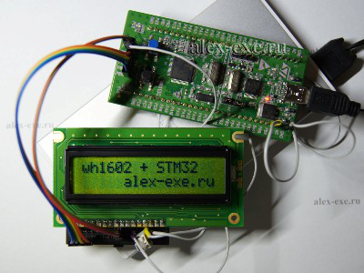
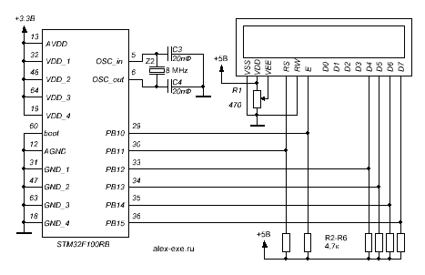
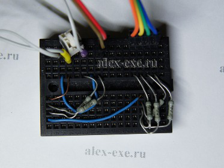

stm32. 5. символьный дисплей hd44780
STM32. 4. Последовательный порт (UART)
Для вывода текстовой информации различного содержания удобно применять символьные дисплеи в виду их распространённости и простоты использования. В основе большинства таких дисплеев лежит контроллер HD44780, который позволяет подключаться к дисплею по 4 или 8 линейной шины данных и 3-х линий управления.

WH1602 подключенный к STM32
В статье расскажу, как подключить такие дисплеи по упрощенной 4-х проводной линии данных с 2-мя линиями управления к контроллеру STM32F100RB установленному на STM32vlDiscovery с помощью двух библиотек: для дисплеев с HD44780 контроллерами и Standard Peripheral Library.
Как и в предыдущей статье по применению дисплея от nokia1100 с stm32 контроллеромза основу возьму свой старый код, написанный под PIC контроллер, адаптирую и оформлю в библиотеку.
Из-за того, что большинство winstar дисплеев (на нашем рынке среди символьных дисплеев на HD44780 преобладают они) имеют 5В питание и логику – это внесёт некоторые особенности их подключения к 3,3В stm32 контроллерам. А именно:
Во-первых: понадобиться 5В источник питания для дисплея, в наше случае на Discovery он есть;
Во-вторых: такой дисплей можно подключить или через согласователь интерфейса , или только к 5В толерантным выводам контроллера с подтяжкой к 5В. Воспользуемся вторым способом. Из таких выходов удобно и подряд расположенные это: RB10 – RB15.

Схема
На макетной плате без пайки такое количество резисторов, скрытое на первой фото под дисплеем, выглядит следующим образом.

Небольшой резисторный ад под дисплеем
Вдаваться в специфику работы дисплеев построенных на HD44780 не буду, если кому интересно в Интернете такого материала много, например можно посмотреть на сайте gaw.ru . Способы общения с такими дисплеями давно реализованы, и взяв за основу свой старый кодсформировал библиотеку под stm32. О ней и расскажу. Для работы с дисплеем остается только добавить в проект 2 файла: lcd-hd44780.c и lcd-hd44780.h , сконфигурировать выводы для работы с дисплеем и работать в своё удовольствие.
Возможности библиотеки:
lcd44780_init_pins() — конфигурирование выводов дисплея
lcd44780_init() — инициализация дисплея
lcd44780_ClearLCD() – очистка дисплея
lcd44780_SetLCDPosition(x,y) — установка курсора
x, y – положение курсора
lcd44780_ShowChar(c) — вывод символа в ASCII
c – символ
lcd44780_ShowStr(*s) — вывод строки
*s – ссылка на строку (массив символов)
Конфигурация порта для работы с дисплеем, описанная в lcd-hd44780.h
01.// Конфигурация порта
02.// используемый порт
03.#define lcd44780_port GPIOB
04.// используемые выводы
05.#define lcd44780_pin_RS GPIO_Pin_11
06.#define lcd44780_pin_E GPIO_Pin_10
07.#define lcd44780_pins_data GPIO_Pin_12 | GPIO_Pin_13 | GPIO_Pin_14 | GPIO_Pin_15
08.// включить тактирование порта
09.#define lcd44780_RCC RCC_APB2Periph_GPIOB
10.// смещение начала линии данных
11.#define lcd44780_offset 12
Библиотека рассчитана на подключения дисплея с помощью 6-ти линий одного порта контроллера. Две линии управления на этом порте могут быть любыми, а вот 4 линии данных должны идти подряд.
В примере дисплей подключен к 5В толерантным линиям порта B, выводы с открытым коллектором. Линии управления E – PB10, RS – PB11. 4 подряд идущих линии данных: PB12, PB13, PB14, PB15 и ещё указано смещение 12, т.к. начинаем с 12 вывода порта.
После задания конфигурации выводов в коде вызываем конфигурирования выводов дисплея функцией — lcd44780_init_pins(), далее инициализируем дисплей — lcd44780_init() и можно с ним работать.
Код примера:
1.lcd44780_init_pins(); // конфигурирование выводов дисплея
2.lcd44780_init(); // инициализация дисплея
3.lcd44780_ShowStr(«wh1602 + STM32»);// вывод надписи на дисплей
4.lcd44780_SetLCDPosition(5, 1);// установка курсора
5.lcd44780_ShowStr(«alex-exe.ru»);// вывод надписи на дисплей
6.while(1==1){} // основная программа в бесконечном цикле
Скачать библиотеку для работы с дисплеями на основе контроллера HD44780
STM32. 6. АЦП, RTC или что-то другое